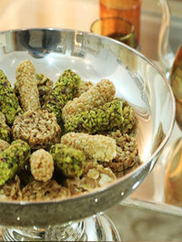

Annonces
Profils
Inscription
Connexion
Site de services rémunérés entre particuliers
Trouver de l'aide pour tous vos petits besoins et petits boulots du quotidien
ou proposez vos services à domicile en devenant Jobbeur sur le site de services entre
particuliers
Je cherche un job
Je cherche un jobber
23 grandes catégories
de services
Ménage
Coaching sportif
Garde d'enfants
Bricolage
Déménagement
Garde d'animaux

Evénementiel
Soutien scolaire
27 annonces
dans toute la Tunisie
annonces à Sfax
(2)
annonces à Tunis
(2)
annonces à Sousse
(2)
annonces à Kairouan
(2)
annonces à Bizerte
(2)
annonces à Gabès
(2)
annonces à Ariana
(2)
annonces à Gafsa
(2)
annonces à Monastir
(2)
annonces à Manubah
(2)
annonces à A Distance
(2)
Trouvez des annonces
dans votre région
3 bonnes raisons d'utiliser "5edma"
Ne ratez aucune offre
Soyez alerté par email dès qu'une nouvelle offre d'emploi correspond à votre profil
Créer une alerte email
Gagnez du temps
"5edma"
regroupe pour vous toutes les offres du marché, quel que soit le secteur ou le type de poste que vous visez
Faire une recherche
Plus besoin de chercher
Vous avez un CV ? Grâce à son analyse, nous trouvons pour vous les offres d’emploi qui correspondent à votre profil.
Découvrir mes offres
home
about
contact
blogs
created by
Mr. Akram Mezgghani
| all rights reserved